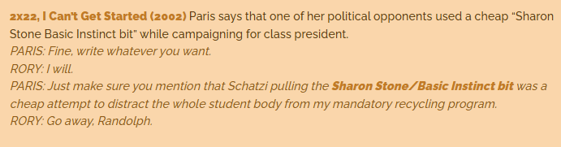

Nick Curran (Michael Douglas) is een rechercheur bij de politie van San Francisco die de moord onderzoekt op Johnny Boz, een rockartiest die tijdens een gevaarlijk seksspelletje is doodgestoken met een ijspriem. Zelf worstelt hij met een verleden van alcoholmisbruik, slecht afgelopen relaties en een ongebruikelijke onderzoekstechniek, waar iets te vaak doden bij zijn gevallen. Sinds hij onder invloed van cocaïne twee toeristen heeft doodgeschoten krijgt hij begeleiding van een psychiater. De belangrijkste verdachte in de moordzaak is Catherine Tramell (Sharon Stone), een aantrekkelijke en intelligente, maar manipulatieve biseksuele schrijfster die een tijdje een relatie had met Boz. In een van haar boeken staat een moord beschreven, die heel veel lijkt op de moord op Boz. De vraag is nu of Catherine de moord heeft gepleegd of dat iemand deze haar in de schoenen wil schuiven. Catherine blijkt er opmerkelijke vrienden op na te houden want twee van haar vriendinnen, waaronder Roxy waarmee ze een relatie heeft, hebben zelf ooit moorden gepleegd maar zijn ermee weg gekomen.
De zaak escaleert wanneer blijkt dat Catherine bezig is met een nieuw boek, geïnspireerd op Nick en waarin de hoofdpersoon voor een foute vrouw valt en gedood wordt. Omdat Catherine veel over hem blijkt te weten valt Nick zijn leidinggevende Nielsen aan omdat hij denkt dat hij de informatie aan Catherine heeft doorgespeeld. Nick wordt op non-actief gezet en begint een relatie met Catherine waarbij hij op bed vastgebonden wordt net als Boz. Roxy wordt jaloers en probeert hem dood te rijden maar verongelukt en sterft. Ook Beth Gardner (Jeanne Tripplehorn), de psychiater van Nick, wordt bij de zaak betrokken en Nick verdenkt haar van de moord op Boz en van eerdere moorden.
Wanneer Nick ontdekt dat de hoofdpersoon in het nieuwe boek zijn collega dood in een lift aantreft en Nick vindt zijn eigen collega ook doodgestoken met een ijspriem in een lift. Hij verdenkt Beth, die ook in het gebouw is en schiet haar dood. Later worden er aanwijzingen gevonden dat Beth misschien toch de moordenaar van Boz is. Nick en Catherine komen weer bij elkaar. Tijdens het vrijen reikt Catherine even onder het bed zonder iets te pakken maar de kijker krijgt te zien dat daar een ijspriem ligt.
Ondervragingsscène
Waarschijnlijk de bekendste scène uit de film is de ondervragingsscène. Catherine wordt ondervraagd door een groepje mannelijke politieagenten. Tijdens deze scène opent ze eventjes haar benen, waarna ze ze weer kruist. Op deze manier laat ze aan de agenten (en de camera) zien dat ze onder haar witte rokje geen ondergoed draagt, waardoor de agenten volledig in de war raken. De scène groeide uit tot een van de bekendste en meest geparodieerde scènes uit de jaren negentig. Voor dit specifieke shot verliet iedereen de ruimte en bleven alleen Paul Verhoeven, Sharon Stone en één cameraman achter zodat het in alle rust kon gebeuren.